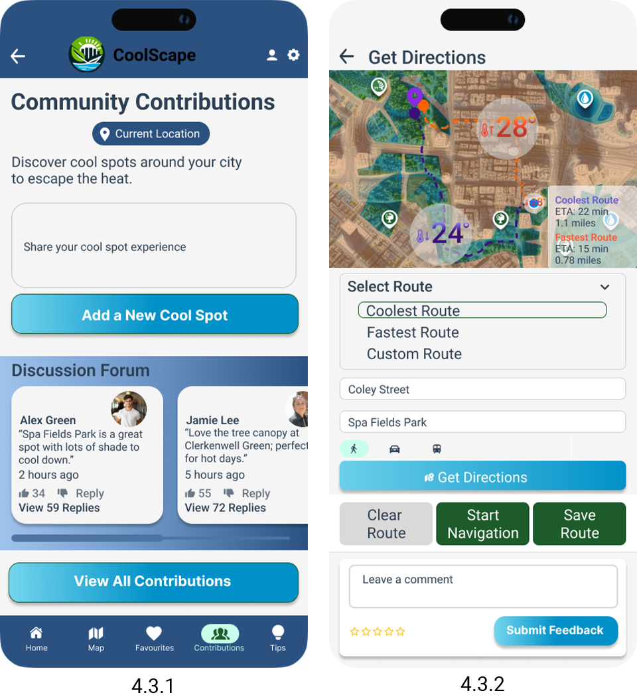

Follow My Adventures
Your presence and engagement are invaluable, as they fuel my creative spirit and help me refine my content.
To develop an interactive urban cooling map that identifies cooling zones in densely populated neighbourhoods to address heat island effects.
To empower communities by providing a user-friendly app that facilitates access to cooling zones and encourages proactive measures against urban heat.
3D Artist
1.1 Introduction to the Urban
Cooling Map
1.2 Importance of Urban Cooling
in Dense Neighborhoods
1.3 Project Scope
2.1 Target Audience
2.2 User Insights
3.1 Primary Research Findings
3.2 Secondary Research
Findings
3.3 Relevant Statistics on Urban Heat Islands
3.4 Exploration of Tools and
Technologies
4.1 Low-Fidelity Prototyping
4.2 High-Fidelity Prototyping
4.3 Storyboarding
6.1 Creation of 3D Models of
Cooling Zones
6.2 Visual Representations of
Temperature Variations
7.1 Overview of Development
Tools
7.2 Development Process and Challenges
7.3 Interactive Map Prototype
The Urban Cooling Map project aims to address the growing concern of urban heat islands in densely populated neighbourhoods. By leveraging real-time temperature data and advanced visualisation techniques, this interactive map provides valuable insights into the effectiveness of cooling strategies in urban areas.

Urban heat islands significantly impact the health and well-being of residents, increasing the risk of heat-related illnesses and energy consumption (Iungman et al., 2023). Implementing effective cooling strategies is crucial to mitigate these effects and create more liveable urban environments. This project highlights the importance of urban cooling and its potential benefits for communities (see Figure 1.1.1).
This project involves developing an interactive map prototype that displays real-time temperatures, creating a mobile app prototype, and integrating 3D models of trees within identified cooling zones. I also explored the potential for visually appealing graphics for the map interface, and developed animations to showcase temperature variations in these zones. The project also focuses on leveraging technologies to understand how they can be implemented in the future, evaluating the strengths and weaknesses of different software tools, and documenting the learning process through practical trials and visual examples.
The Interactive Urban Cooling Map targets residents of densely populated neighbourhoods affected by urban heat islands. This audience includes young professionals seeking sustainable solutions, families aiming to protect children from heat, and seniors looking to maintain mobility in extreme temperatures. Each group has distinct needs, highlighting the importance of the map in offering tailored solutions that enhance access to cooling areas and foster community engagement in climate action.
Insights gathered from the user personas reveal distinct yet interconnected motivations that can enhance the effectiveness of the Interactive Urban Cooling Map. Emily values sustainable urban development and would appreciate features that highlight local events. John seeks practical information on accessible cooling spots due to concerns about rising costs and safety for his children. For Margaret, easy access to shaded areas and social activities creates a sense of belonging. Overall, these insights highlight the need for engaging content and a user-friendly design.
To achieve my research objectives, I designed a seven-question survey using Google Forms to assess perceptions of urban heat impacts and gather feedback on my interactive cooling map idea. The survey was disseminated over four weeks through social media platforms, aiming to obtain at least 30 responses for statistically relevant data.
Impact of Urban Heat Island on Quality of Life:
Insight:
53.6% of respondents recognize the negative effects of urban heat islands (see figure 3.1.1).
Interpretation:
Highlights the community's awareness and need for solutions like the Interactive Urban Cooling Map.
Interest in Interactive Map:
Insight:
93.1% believe an interactive map would encourage exploration of cooling zones (see figure 3.1.2).
Interpretation:
Validates the core concept of my project and indicates strong potential user engagement.
Desired Features in the Map:
Insight:
Key features desired include real-time temperature data (72.4%), shaded areas and green spaces (75.9%), and interactive route planning (58.6%) (see figure 3.1.3).
Interpretation:
Interpretation: These insights should guide the design and functionality of my map.
The primary research findings highlight the community's awareness of urban heat islands and the strong interest in an interactive cooling map. Key desired features include real-time temperature data, shaded areas, and interactive route planning. These insights directly inform the design and functionality of the Interactive Urban Cooling Map, ensuring it meets user needs and enhances its effectiveness.
In my research on Urban Heat Islands (UHIs), I found that densely populated areas experience significantly higher temperatures than rural ones, primarily due to human activities. This exacerbates health risks, increases energy consumption, and elevates pollutant emissions. Addressing UHIs is essential for fostering healthier communities, especially as climate change worsens heat events (Tong et al., 2021).
UHIs disproportionately affect vulnerable populations, such as the elderly, children, and those with pre-existing health conditions (Royal Meteorological Society, 2024). Addressing these disparities supports equitable health outcomes and aligns with sustainability goals. Raising awareness of cooling zones and less heated transit routes can mitigate heat exposure, promoting well-being and engagement with urban spaces (Seabrook, 2023). An interactive urban cooling map can provide residents with critical information to navigate their environments effectively.

Urban areas can be 10°C warmer than rural regions, raising cooling demand by 5-10% (see figure 3.2.1), worsening health risks, and reducing quality of life due to the urban heat island effect (Golden, 2004).
Research shows that urban heat islands in London increase heat-related mortality rates, particularly impacting vulnerable groups like the elderly and children (see source at the beginning of this section). Awareness of these disparities is crucial (Mavrogianni et al., 2022).
The EPA reports an increase in summer deaths due to heat and cardiovascular diseases in the U.S. (see figure 3.2.2), underscoring the need for effective public health initiatives and urban design strategies to protect at-risk communities from heat impacts (U.S. Environmental Protection Agency, 2024).
The statistics from my secondary research strongly underscore the necessity of my interactive cooling map. By highlighting the dangerous temperature disparities and their health consequences, I found that my project can serve as a vital resource. It can empower residents with essential cooling zone information, ultimately promoting well-being in urban settings.
In my research on software tools for interactive maps, I found Mapbox particularly appealing due to its user-friendly interface and customizable visuals, especially when integrating with OpenStreetMap and GeoJSON. Mapbox offers numerous customisation options for developers to create tailored, visually stunning maps (UpTech). GIS software like QGIS and ArcGIS is essential for analysing and visualising spatial data for urban planning, environmental monitoring, and navigation. QGIS is beginner-friendly and free, while ArcGIS can overwhelm newcomers with its complexity and subscription model (GIS Geography). QGIS also supports robust mapping and plugins, enhancing its functionality (Stats Maps N Pix).
In my exploration, I also discovered that the Level of Detail (LOD) system is vital for optimising map performance, allowing the display of varying levels of detail based on zoom and interaction, which significantly enhances the user experience (Heritage Science Journal).
Moreover, I examined Figma, which excels in high-fidelity app prototyping, offering intuitive design features that facilitate team collaboration and streamline the design workflow (Foonkiemonkey).
Each tool has unique strengths tailored to different user requirements. This exploration has provided valuable insights into the best software for developing interactive maps and creating prototypes, equipping me with the knowledge to choose the right tools and techniques for effectively designing and prototyping interactive maps.
To create my low-fidelity prototype of the Interactive Urban Cooling Map, I sketched a base map of a summer urban environment. I used magazine cutouts for green areas (trees, water bodies, walking paths) and tape stickers for buildings to distinguish cooling areas from heated sections.
In this scenario, the user (a red cone shape) aims to reach a friend’s house in a busy downtown area. He can choose between two routes: a longer, cooler path marked with red thread through green areas, or a faster, hotter route marked with orange thread through heated sections. This visual contrast helps the user decide between comfort and speed, emphasising the importance of choosing paths that prioritise comfort and safety.
In my project, I've created rough sketch wire-frames for my main app, which will feature five essential pages: Home, Map, Favourites, Contributions, and Tips. These pages aim to provide an interactive experience that informs and empowers users to take proactive measures against urban heat, while fostering community cohesion. Each page will include a consistent bottom navigation with five icons, and a top navigation featuring a back button, app logo, user location, profile, settings, and notifications on the Home page.
In this second sketch, I clarified the purpose of each wire-frame and user interactions, including pop-up windows.
The Home page welcomes users with a brief description of the app’s purpose and features. Below this, a cityscape image filled with trees emphasises the importance of cooling areas. To encourage engagement, two prominent call-to-action buttons are included: one directs users to the interactive map to explore cooling zones, and the other guides them to the community contributions page, fostering collaboration and sharing of local knowledge.
The map page is the central feature of my project, allowing users to easily locate cooling zones in their area. The layout spans the entire page, with a search bar at the top where users can enter their address or nearby landmarks to find cooling zones quickly.
A key component of the map is the real-time temperature display, which shows the current temperature of the user's location using a semi-transparent circle. The 3D map itself is colour-coded: green indicates cooling areas like parks and tree canopies, while orange highlights heat zones. Users can hover over cooling icons to see specific temperatures, and click on them to bring up a pop-up window with more details about that location. This pop-up includes essential information, such as environmental data and images, along with a "Pin This Location" button to enhance user experience.
The “Get Direction” button, a circular icon on the right, opens a pop-up for entering destinations. The window includes a top bar with navigation icons, a mini interactive map with route markers, and a drop-down for selecting the coolest, fastest, or custom routes. Users can input starting and ending points. Below, buttons for “clear route,” “start navigation,” and “save route” enhance functionality. At the bottom, a comment box and star rating system allow feedback.
This design ensures a user-friendly, interactive experience, making it easy for users to find and navigate to cooling zones while providing valuable environmental information.
Favourites Page: This page allows users to save their favourite cool spots. A toggle option switches between a list view and a map view. The list displays each spot with an image, details, and user reviews, while the map view visualises the spots with pins for quick information access. A prominent button invites users to "Add a New Cool Spot."
Community Contributions Page: Featuring a location tool, this page encourages users to share their cool spot experiences through a text box and a central "Add Cool Spot" button. A discussion forum displays contributions, with a button to view all responses.
Tips & Resources Page: This page includes a tips search bar and sections for educational articles, health and safety tips for heat waves, and links to local resources like community programs and emergency contacts.
I think these wireframes will boost user engagement and provide useful info on urban heat. They visually guide users through the app, making everything smooth and informative.
Here is my high fidelity app prototype, which aligns closely with the initial sketch wire-frames. To enhance usability, I've implemented features like horizontal scrolling on specific pages to save space, and I’ve added an automatic slider for the articles section on the tips page, improving the user experience.
To achieve a modern look, I opted for rounded rectangles for buttons and content backgrounds. The primary colour palette revolves around blue, chosen to reflect a cooling theme and enhance usability. To create a dynamic feel, I incorporated gradients into the content background. For the call-to-action buttons, I selected a turquoise blue and a strong blue gradient to boost user engagement. I chose the Roboto font for its clean, modern appearance and excellent readability, which enhances the user experience.
Prior to designing the high-fidelity prototype, I carefully considered the app's colour palette to reflect a cooling theme. Initially, I experimented with coral shades for call-to-action buttons, but found them unsatisfactory. After generating a new palette featuring teal shades—a decision reinforced by feedback from colleagues — I decided this gemstone hue was much more suitable for the overall design.
After generating a new palette featuring teal shades, a decision reinforced by feedback from colleagues — I decided this gemstone hue was much more suitable for the overall design.
For the navigation elements, I chose a classic white colour for the top and bottom buttons. Active page buttons feature a rich earthy tone and a pale cyan-lime green for the icon backgrounds to highlight the active page and make icons stand out subtly.
Additionally, I tested shapes for the map page’s ‘Get Directions’ button. Although I considered using a rounded rectangular shape for better visibility, I prioritised maximising the map view and chose a circular design as per my sketches.
In my user storyboard, I focused on John, a busy father searching for cool spots for his kids on a hot summer day. I explored key features of the CoolScape app, detailing his journey from opening the map to pinning locations and accessing directions.

I identified gaps in the user experience, particularly in the horizontal scrolling for the discussion forum (figure 2.11), which made navigation challenging. I also discovered the pop-up window, the route details cluttered (figure 2.12) the map view, detracting from the overall design.
To enhance the user experience, I fixed my prototype. I improved the layout of pop-ups for a clearer map view, and eliminated horizontal scrolling by creating a vertical scroll for discussion section.
Overall, my goal was to visualise John’s user journey while pinpointing areas for enhancement to ensure a seamless experience.
The Interactive Urban Cooling Map begins with users launching the application to explore cooling zones like parks and water features. They can view real-time temperature data and receive tailored route suggestions, minimising heat exposure. Users contribute by adding new areas or sharing feedback, which is moderated to ensure accuracy. The map is regularly updated, promoting community engagement through local events. By leveraging this resource, users experience enhanced comfort and reduce their exposure to urban heat, fostering a collaborative environment that raises awareness and encourages collective action against rising temperatures. Ultimately, users benefit from a more comfortable and informed urban experience.
In this section, I outline the main cooling objects designed for my interactive map prototype. I created low-poly models with minimal detail, utilising a green gradient for foliage and brown for tree trunks. Three model variations correspond to different levels of detail: low-poly for distant views, medium LOD1 for intermediate distances, and high-detail LOD2 for close-up perspectives. Additionally, I have included a short video showcasing the modelling process for LOD1 and LOD2, highlighting how I used geometry nodes for the foliage, which I later converted to mesh.
This is the second paragraph with the video on the right and text on the left. The video provides a visual representation of the topic discussed in the text. This layout is ideal for emphasizing the textual content while still providing a visual element to engage the viewer. You can use this format to create a dynamic and interactive experience for your audience.
This project became a testament to the growth I experienced throughout the academic year, showcasing my evolution in both sculpting and texturing. The journey from initial concept to finalised models is a testament to the power of perseverance and joy of pushing creative boundaries – a journey that will undoubtedly shape my artistic journey for years to come.
Overall, this project was a valuable learning experience for me, as it taught me how to work within constraints and find creative solutions to complex design challenges. Despite the limitations and challenges I faced, I am proud of the final result and feel that I was able to create a visually cohesive and engaging game asset.
The Level of Detail (LOD) system is essential in 3D modelling for optimising performance without sacrificing visual quality. It involves creating multiple versions of a model with varying detail levels, and dynamically switching between them based on the viewer's distance. This technique is crucial for interactive maps, video games, and virtual reality (VR) projects, where high performance and visual fidelity are vital (United BIM, 2024; Wikipedia, 2024).
In this project, I developed an LOD system for tree models using Blender. The animation render demonstrates the transition between low-detail and high-detail models. This approach enhances the efficiency of rendering complex scenes, making it indispensable for my 3D map project. If I develop this project further in the future, the LOD system will ensure that users can seamlessly explore the map, even on devices with limited processing power.
In this section, I discuss the tools used for developing the interactive map and mobile app prototype. I utilised QGIS for its robust GIS capabilities, and Mapbox for its user-friendly interface and powerful mapping features. Figma was used for prototyping and integrating interactive elements.
The figures presented in this overview provide a comprehensive look at the processes involved in utilising Mapbox and QGIS for the urban cooling project. This section highlights the development process, the challenges faced, and the solutions implemented to create an interactive and functional map prototype.
In Mapbox, the initial setup is established (Figure 7.2.1), forming a base for customisation and integration. For this project, I randomly chose Clerkenwell, London (Figure 7.2.2). Excessive street details are minimised for clarity (Figure 7.2.3). Building extrusions are highlighted, providing detailed urban representations (Figure 7.2.4)Real-time temperature data points are added (Figure 7.2.5), and temperature labels are styled to display values correctly (Figure 7.2.6). Tree points data sourced from OSM are added (Figure 7.2.7), and colour is applied to these points (Figure 7.2.8). Finally, 3D tree models are integrated on the point data (Figure 7.2.9). Despite efforts, the tree model did not display correctly, showing only a single original model. Error checks indicated the trees existed in the scene, but were not visible, and I couldn't find a solution despite seeking help.
In QGIS, OSM data is used to select a location, save, and upload to QGIS (Figure 7.3). A tree layer is chosen, and 3D tree models are integrated (Figure 7.3.1). Building extrusions are highlighted (Figure 7.3.2). The Qgis2threejs exporter is used to export the file to the web (Figure 7.3.3). Due to rendering issues with the DEM (raster layer), the file is exported using Qgis2threejs (Figure 7.3.4), showcasing the integration of geographic data and 3D models.
The interactive map prototype showcases several features that facilitate user engagement. (see prototype at the beginning of this section). Users can seamlessly navigate through different sections. Clicking on amenities like parks opens a pop-up window with detailed information. The tips page is scrolled vertically, offering users educational articles that address urban heat problems. including the coolest and fastest route features, temperature display when users hover.
While my first prototype offered static images of the map, I aimed to develop a more dynamic experience using Mapbox. This newer prototype incorporates a panning feature, allowing users to explore a 3D map interactively (See prototype above).
In today's digital age, social media platforms have become an integral part of our lives, not only for personal use, but also for professional purposes. Among the many platforms available, I chose Instagram and LinkedIn as my primary channels for showcasing my work and connecting with potential employers.
Instagram, a social media behemoth with over a billion monthly active users, has emerged as a formidable platform for showcasing one's artistic prowess. Its visually captivating interface serves as an ideal canvas for creatives, like myself, a 3D visualiser, to exhibit our work and connect with a vast audience. By leveraging the platform's emphasis on visual content, we can effectively convey our skills, artistic style, and boundless imagination to our followers. Through the strategic sharing of high-quality images and captivating videos, we engage our audience, inviting them to immerse themselves in our creative journey. This exposure not only broadens our reach, but also fosters new opportunities for collaboration and growth. Instagram's vibrant community provides a unique platform for creatives to connect, inspire, and collaborate, propelling us forward in our artistic endeavours.
On the other hand, LinkedIn is another platform I chose to use for professional purposes. As the world's largest professional network, LinkedIn boasts over 740 million users worldwide, making it an essential tool for job seekers, freelancers, and business professionals. The platform's primary focus is on connecting individuals with potential employers, clients, and collaborators, making it an ideal place to showcase one's skills, experience, and accomplishments.
The Interactive Urban Cooling Map supports Sustainable Development Goal 11 by making cities inclusive, safe, resilient, and sustainable. It helps reduce urban heat islands by highlighting cooling zones, promoting green spaces, and enhancing community resilience to climate change impacts.
The map addresses human needs by incorporating sustainability principles:
This approach ensures the map is functional, environmentally friendly, and beneficial for urban communities.
This project became a testament to the growth I experienced throughout the academic year, showcasing my evolution in both sculpting and texturing. The journey from initial concept to finalised models is a testament to the power of perseverance and joy of pushing creative boundaries – a journey that will undoubtedly shape my artistic journey for years to come.
Overall, this project was a valuable learning experience for me, as it taught me how to work within constraints and find creative solutions to complex design challenges. Despite the limitations and challenges I faced, I am proud of the final result and feel that I was able to create a visually cohesive and engaging game asset.
Throughout this project, I successfully integrated 3D models with geographic data, created an interactive map prototype, and used various development tools such as QGIS, Mapbox, and Figma.
I faced several challenges, including issues with JavaScript errors and rendering in QGIS. However, I overcame these challenges by exploring alternative solutions and leveraging the strengths of each tool. This experience has enhanced my skills and knowledge in GIS, mapping, and prototyping.
In the future, I plan to refine the interactive elements, improve the visual quality of the map, and explore additional features and functionalities. This project has been a valuable learning experience, and I look forward to continuing my journey in mapping and prototyping.
Ajuntament de Barcelona. (2020). Barcelona green infrastructure and biodiversity plan 2020. Available at: https://www.barcelona.cat [Accessed 28 Nov. 2024].
European Commission, 2022. Cities are often 10-15°C hotter than their rural surroundings. Available at: https://joint-research-centre.ec.europa.eu/jrc-news-and-updates/cities-are-often-10-15-degc-hotter-their-rural-surroundings-2022-07-25_en [Accessed 6 Dec. 2024].
Foonkie Monkey, 2024. 10 Reasons Why Figma is the Best UX/UI Design Tool for App Development. Available at: Foonkie Monkey [Accessed 7 Dec. 2024].
GIS Geography, 2024. Best GIS Software. Available at: https://gisgeography.com/best-gis-software/ [Accessed 7 Dec. 2024].
Golden, J.S., 2004. The Built Environment Induced Urban Heat Island Effect in Rapidly Urbanizing Arid Regions – A Sustainable Urban Engineering Complexity. Environmental Sciences, 1(4), pp.321-349. Available at: https://www.tandfonline.com/doi/epdf/10.1080/15693430412331291698?needAccess=true [Accessed 6 Dec. 2024].
Greater London Authority, 2023. Green Roofs and Urban Parks. [online] Available at: https://www.london.gov.uk [Accessed 4 Dec. 2024].
Iungman, T., et al., 2023. 4% of summer mortality is attributable to urban heat islands. The Lancet. Available at: https://www.isglobal.org/en/-/4-of-summer-mortality-is-attributable-to-urban-heat-islands [Accessed 5 Dec. 2024].
Jain, R., Brar, T.S., & Kamal, M.A., 2023. Environmental Impact and Mitigation Benefits of Urban Heat Island Effect: A Systematic Review. Available at: https://www.researchgate.net/publication/367000837_Environmental_Impact_and_Mitigation_Benefits_of_Urban_Heat_Island_Effect_A_Systematic_Review [Accessed 6 Dec. 2024].
Liritzis, I., & Laskaris, N., 2023. Environmental Impact and Mitigation Benefits of Urban Heat Island Effect: A Systematic Review. Heritage Science, 11(1), p.41. Available at: https://heritagesciencejournal.springeropen.com/articles/10.1186/s40494-023-01041-z [Accessed 7 Dec. 2024].
Mavrogianni, A., Taylor, J., Milojevic, A., Oikonomou, E., Heaviside, C., Tsoulou, I., Petrou, G., Symonds, P., Davies, M., & Wilkinson, P., 2022. Heat-Related Mortality in London: An Urban Heat Island Perspective. In: Urban Climate Resilience. Springer, Singapore. Available at: https://link.springer.com/chapter/10.1007/978-981-19-4707-0_8 [Accessed 6 Dec. 2024].
Murtinová, V., Gallay, I., and Olah, B., 2022. Mitigating Effect of Urban Green Spaces on Surface Urban Heat Island during Summer Period on an Example of a Medium Size Town of Zvolen, Slovakia. Remote Sensing, 14(18), 4492. Available at: MDPI [Accessed 6 Dec. 2024].
Royal Meteorological Society. (2024). Urban Heat Islands. Available at: https://www.rmets.org/metmatters/urban-heat-islands [Accessed 28 Nov. 2024].
Seabrook, V. (2023). Heatmaps reveal the warmest and coolest areas of five English cities - and the impact of green spaces. Sky News. Available at: https://news.sky.com/story/heatmaps-reveal-the-warmest-and-coolest-areas-of-five-english-cities-and-the-impact-of-green-spaces-12923232 [Accessed 28 Nov. 2024].
Sharma, A., 2022. Heat-Related Mortality in London: An Urban Heat Island Perspective. In: Urban Climate Resilience. Springer, Singapore. Available at: https://link.springer.com/chapter/10.1007/978-981-19-4707-0_8Link [Accessed 6 Dec. 2024].
Stats Maps N Pix, 2022. Which GIS Software is Best? Available at: https://www.statsmapsnpix.com/2022/10/which-gis-software-is-best.html [Accessed 7 Dec. 2024].
Tong, S., Prior, J., McGregor, G., Shi, X., & Kinney, P. (2021). Urban heat: an increasing threat to global health. BMJ, 375, n2467. Available at: https://www.bmj.com/content/375/bmj.n2467 [Accessed 28 Nov. 2024].
United-BIM, 2024. BIM Level of Development (LOD) 100, 200, 300, 350, 400, 500. [online] Available at: https://www.united-bim.com/bim-level-of-development-lod-100-200-300-350-400-500/ [Accessed 8 Dec. 2024].
Uptech, 2024. Mapbox vs Google Maps vs OpenStreetMap. Available at: https://www.uptech.team/blog/mapbox-vs-google-maps-vs-openstreetmap [Accessed 7 Dec. 2024].
U.S. Environmental Protection Agency, 2024. Climate Change and Heat Islands. Available at: https://www.epa.gov/heatislands/climate-change-and-heat-islands [Accessed 6 Dec. 2024].
Books
Anthamatten, P. (2020) How to Make Maps: An Introduction to Theory and Practice of Cartography. London: Routledge.
Birkeland, J. (2002) Design for Sustainability: A Sourcebook of Integrated Ecological Solutions. London: Earthscan.
Cardoso, C. and Badke-Schaub, P. (2009) Fixation or Inspiration: Creative Problem Solving in Design. Delft University of Technology.
Famulari, S. (2020) Green Up: Sustainable Design Solutions for Healthier Work and Living Environments. Milton: Routledge.
Gartland, L.M. (2008) Heat Islands: Understanding and Mitigating Heat in Urban Areas. London: Routledge.
Osborne, C. (2010) Climate Design: Design and Planning for the Age of Climate Change. Azure Publishing Inc.
Articles
Aboulnaga, M., Trombadore, A., Mostafa, M., & Abouaiana, A. (2024) Livable Cities: Urban Heat Islands Mitigation for Climate Change Adaptation Through Urban Greening. Springer. Available at: https://ebookcentral.proquest.com/lib/winchester/detail.action?pq-origsite=primo&docID=4717024 (Accessed: 2 November 2024).
American Society of Landscape Architects, 2021. Urban Heat Islands: The Impact of Heat on City Life. American Society of Landscape Architects. Available at: https://dirt.asla.org/2021/05/11/urban-heat-islands-are-increasingly-dangerous-but-planners-and-designers-have-solutions/ [Accessed 22 November 2024].
Global Covenant of Mayors for Climate & Energy, 2020. Urban Heat Islands: Managing Extreme Heat to Keep Cities Cool. Available at: Global Covenant of Mayors [Accessed 22 Nov. 2024].
Hayes, A.T., Jandaghian, Z., Lacasse, M.A., Gaur, A., Lu, H., Laouadi, A., Ge, H. & Wang, L., 2022. Nature-Based Solutions (NBSs) to Mitigate Urban Heat Island (UHI) Effects in Canadian Cities. Buildings, 12(7), p.925. Available at: https://www.mdpi.com/2075-5309/12/7/925 [Accessed 22 Nov. 2024].
Joint Research Centre (2024) 'Urban heat islands: managing extreme heat to keep cities cool', European Commission. Available at: https://joint-research-centre.ec.europa.eu/jrc-news-and-updates/urban-heat-islands-managing-extreme-heat-keep-cities-cool-2024-07-22_en ( Accessed: 27 November 2024).
Plotly Blog (2019) 'How to Create Interactive Climate Model Maps in Python', R-Craft. Available at: https://r-craft.org/how-to-create-interactive-climate-model-maps-in-python/ (Accessed: 25 November 2024).
Ramakreshnan, L. & Aghamohammadi, N., 2024. The Application of Nature-Based Solutions for Urban Heat Island Mitigation in Asia: Progress, Challenges, and Recommendations. Current Environmental Health Reports, 11, pp.4-17. Available at: https://link.springer.com/article/10.1007/s40572-023-00427-2 [Accessed 22 Nov. 2024].
Video Tutorials
CWU Geography (2022) Creating an inset map in QGIS. Available at: https://www.youtube.com/watch?v=cqM5feQyT2A (Accessed: 29 November 2024).
CWU Geography (2022) Downloading OpenStreetMap data using QGIS and QuickOSM. Available at: https://www.youtube.com/watch?v=X3crjuhOBro (Accessed: 29 November 2024).
Design custom 3D maps using Figma and Mapbox studio (2023) Design custom 3D maps using Figma and Mapbox studio. Available at: https://www.youtube.com/watch?v=7Skwqiso22I&t=13s (Accessed: 3 November 2024).
Download DEMs in QGIS for a Specified Extent with the OpenTopography DEM Downloader Plugin (2023) Download DEMs in QGIS for a Specified Extent with the OpenTopography DEM Downloader Plugin. Available at: https://www.youtube.com/watch?v=EMwPT7tABCg&t=15s (Accessed: 10 November 2024).
Figma Map - Figma Interactive Map (2023) Figma Map - Figma Interactive Map. Available at: https://www.youtube.com/watch?v=i3vVCavfCC0 (Accessed: 3 November 2024).
How to make trees in Blender (2023) How to make trees in Blender. Available at: https://www.youtube.com/watch?v=9NkMkYVz7bw&t=1930s ( Accessed: 19 November 2024).
LOD system with Blender (2023) LOD system with Blender. Available at: https://www.youtube.com/watch?v=JdPAKLgdb7M&t=193s (Accessed: 19 November 2024).
Mapbox (2024) Getting started with Mapbox Standard in Studio. Available at: https://docs.mapbox.com/help/tutorials/aa-standard-in-studio/ ( Accessed: 29 November 2024).
Mapbox (2024) How-to Videos. Available at: https://docs.mapbox.com/help/how-to-videos/ (Accessed: 29 November 2024).
Urban Heat Islands (2023) Urban Heat Islands. Available at: https://youtu.be/_APd2hgY4n4?si=Whje6jSTlAr4gTvl (Accessed: 29 November 2024).